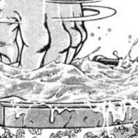
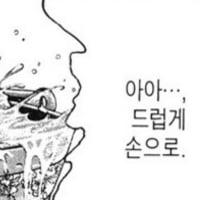
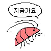

마지막에 삶을줄
집에가자 아이고 이쁘다
심슨생각나네
키운다고 했잖아! 키운다고 했잖아!
아우 징그러


억지러 컨셉 안잡아도 되는데 계속 물리네 ㅋㅋ
컨셉에 물린 거임
차라리 아예 크면 안징그러운데
바퀴벌레 사이즈쯤 되니깐 더듬이 존나 징그럽네
으악 너무 징그러ㅠㅠㅠ 물끓여 빨리 어떡해
몇마리를 짜부시키는거야
닭도 5주부터 처먹는데 쟨 뭔데 왜 안 처먹음?
랍스터
랍스터는 무한대로 성장함
탈피만 되면 죽지 않음
랍스타가 잡아먹히는거 제외한 사망 원인은 탈피실패로 인한 사망 뿐 노화가 없는 생물이고 무한히 성장
이걸로 노화 억제 연구한거고 이번에 임상실험 들어간거
세포 분열의 원동력인 텔로미어까지 재생하는 종임
일란성 쌍둥이 텔로미어 짧아서 일찍 죽는 애들 치료 가능 할 수도 있겠네
으악 ㅅㅂ 벌레다
마지막에 노래바뀌면서 끓는 냄비에 쫙 던지는거 어딨음
양식장 같은곳에서 분류해서 키우나?
문득 저런 생명체 입장에서는 수십억명의 신이 존재하는 세상에 살고 있는 것 아닐까 싶다 ㅋㅋ
의도를 이해할수도 명확하게 인지할수도 없는 존재.
신이라는 존재도 인식못하고 모든 대상을 천적, 못 먹음, 먹을 수 있음 같은 개념으로 볼듯
언제 빨개져요?
키운다며! 키운다며!
왜 그 엔딩이 아닌데ㅡㅡ
가재다

으악 색깔도 시꺼먼게 작으니까 개징그럽네
어허! 새우젓
3인치에서 존나 놀랐네 ㅅㅂ...
6인치때 가재도 짜잔 하는 거 같아서 귀엽네 ㅋㅋ
한달에 1인치씩 자라네
왜 젓갈안담금
6인치 부터는 먹어도되겠는걸??
난 키워서 먹어
성장의 손 ㄷㄷ
새끼때는 좀벌레같네 어우 ㅋㅋㅋㅋ
언제 먹어